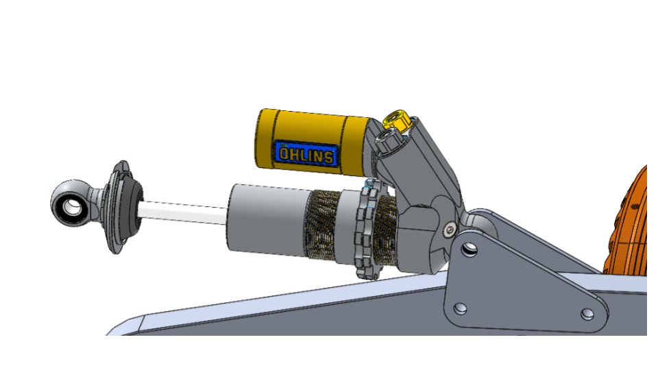

Shock Clevis Design
Background
As part of my university’s FSAE Formula Electric Team, I was tasked to design a shock clevis for the car’s suspension system. The shock clevis role was to serve as the medium that fastens the damper and spring to the car’s chassis. While the racetrack we would be testing the vehicle would be relatively smooth, it was important to get our car suspensions designed correctly so it accomplish the following goals.
- Allow rapid cornering without extreme body roll
- Keep the tire in contact with the road after striking bumps and or holes in the road
- Prevent excessive body squat ( body tilts down in rear) when accelerating and body dive (body tilts down in front)
In a traditional F1 Car, the two most popular suspension styles are push rod suspensions and pull rod suspension. These type of suspensions system operate independently, meaning each wheel is free to jounce and rebound as it encounters obstacles in the road.
Push Rod and Pull Rod Suspension where A: Lower Control Arm, B: Upper Control Arm, C: Pull Rod, D: Push Rod
Our team decided to go with a push-rod suspension style as it afforded easy access to the spring and dampers by placing them at the top of the back plate as well as placing them out of the way of our control arms. While this would result in a higher center of gravity, we were confident that our torsion bar configuration would help prevent rolling and the advantages in accessibility outweighed the disadvantages.
In a push rod configuration, when the tire encounters a bump, it “pushes” the push rod upward against the spring, which then transfers the force of impact against the chassis. These springs are located co-axially to dampers, which minimize the oscillations produced by the spring moving up and down.
Push Rod Kinematics from bremarauto.com
Design
Given the background of the suspension system, a double shear shock clevis design was chosen to help distribute the shear force applied by the shock.
Double Shear Shock
Given the inputs of the maximum compression force and rebounce force and assuming a basic triangular geometry, I began to calculate reaction forces symbolically. The three parameters I had to design for were the material type, material thickness, and the diameter of the fasteners. I knew that the major failure types would mostly like be bearing stress and tearout stress, given the conditions. As I did not have enough data on the cycling loading of the clevis, I would explore that failure type in a latter study as our team simply wanted to make a first prototype. For the material type in an effort to conserve material, we decided to choose a ½ inch sheet metal piece of 7075 Al we had lying around in our shop. 7075 Al balance a good strength to weight ratio, which would be sufficient for our design.
Failure Methods and Safety Factors
From the above calculated forces, it is evident that the shock clevis design is more than sufficient, however more could be done to lightweight this design.
Topology Optimization
To lightweight my design, I decided to use Solidworks built in topology optimization. Solidworks topology optimization works by feeding in my input forces and materials and by using numerical methods, it highlights what material is important structurally and what is redundant. In this photo, the original outline is orange, while the new topology feature is highlighted using a color bar.
Solidworks Topology of Clevis
Following this topology geometry, I created a weight reduced clevis. This weight reduced clevis results in 22% less material being used. With regard to manufacturability, the availability of waterjet affords more unique geometry in comparison to a traditional CNC, thus allowing for this new clevis to be manufactured in our new car.
Original Clevis (left) and Weight Reduced Clevis (right)